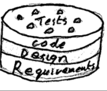

Will adding any new requirements at this point in the design process slow the project? For requirements added, do you need to start at the beginning and create all the diagrams for it?
Key point -- you are not in "the design process". You've just completed some design for some
of the requirements. You've even (in theory) coded and tested the partial design out.
Now it is time
to add new use cases and scenarios and expand your design to handle them.
You are careful to sequence the implementation of use cases and scenarios so that the
ones done first give a stable set of classes. You also should use advanced OO
patterns to make the designs robust.
So in the agile methods one
does return to studying the requirements in each iteration -- especially in the elaboration
phase.
If we attempt to get all the requirements first and then do all the design, and then
implement and test....
Typically the requirements have changed before we get to testing, and worse we discover
the errors
made a long time ago.
Going back and reworking all the requirements and design then does slow down the project.
Indeed this often
happens when the tests expose requirements we had not thought of, or had not been told about.
Hence it is better to start by selecting only a few requirements to start with, but
pick ones that should teach
us a lot about the project and our solutions. We take this partial system all the way to a tested
set of code. This way we tend to accumulate the design as the
project proceeds. We progress at a steady speed of the number of requirements met and tested per iteration.
Perhaps some images may help. If I offered you a cake to eat...

Would you plan to eat it one layer at a time: requirements, Design, Code and then all
the tests:
[ cake2fragile.png ]
or in slices:
[ cake2agile.png ]
with a little bit of each layer and a test on top?
What are the differences between applying UML as a blueprint versus applying UML as a programming language?
Automation.
A blueprint is a copy (white on blue) of a drawing made by an engineer for something. It is made into
something by a technician.... Programming languages are translated to executable
software by a machine --
the compiler/interpreter system.
A | | B
|<-------->|
| |
This says that objects in one class have access or know about objects in the other class. It
suggests that each class will contain either a pointer or a collection of pointers to
the objects at the other end.
class A{ ...... list<B*> b; ... };
class B{ ...... list<A*> a; ... };
Operations in the two classes that change the association must maintain the
invariant that if an A is associated a B then
that B is also associated with the first A.
More: Attributes like "a" and "b" above should be private to stop other objects breaking
the system. As a result the classes may have to provide "getter" operations to allow
other objects to navigate the association. For example:
class A{ ...... private list<B*> b; ... public list<B*> getB(){...} };
class B{ ...... private list<A*> a; ... public list<A*> getA(){...} };
This allows an object in a third class to have a loop like this
for( list<A*> l = myB.getA(), ILA i = l.first(); i!=l.end(); i++) ...
using the C++ notation and STL list. Here ILA is short for "list<A*>::iterator".
Of course, you can chose to not use "list" and replace it by "vector", "set", ... if
these provide the operations needed in your design.
Is refactoring a step by step process, or is it considered when having found mistakes, or when you have created a large amount of your system?
Refactoring is a step by step process. Baby steps. Steps that are guaranteed to
not change the behavior of the program. Here are some typical steps
- Add a new class.
- Add a new operation to an interface.
- Copy an operation from an old class into a new class.
- ...
After each step -- recompile and retest.
It is used when you have a working system. It does not correct mistakes, it improves (cleans)
the code up. It uncovers the elegant and simple self documenting system that is hidden
by the rapidly evolved system that survived testing.
When should you refactor? How big a system before refactoring? I like the XP adage:
- Never let the sun set on bad code.
In other words.... when you have got the system -- however small to pass its tests, you then
clean up your work before you go home.
Is the UML used in other parts of the world? If not, what are it's equivalent forms?
I expect the UML to be as international as ASCII -- the American
Standard Code for Information Interchange.
In some cases it has absorbed notations from international (ISO) standards.
I wonder what it looks like in Chinese or Japanese?
I'm confused when the book states that that it is common to work on varying scenarios over several iterations and then states that one scenario should not be split across iterations. It seems that it really doesn't matter about the iterations but the complexity of the scenario. Is that correct or should you try to finish the scenario before the next iteration?
You should aim to complete a scenario in a single iteration -- a kind
of soup to nuts implementation. If necessary you may even split
a complex scenario up into simpler ones so that you can show the
user and test your ideas out in one iteration.
A worst case would be discovering a complexity towards the end of an
iteration.... time to create a new scenario for that case and add
it to the "back log" of tasks for a later scenario. Of course,
if you are following risk driven development this worst case should not
happen.
However -- requirements change as a project continues. So you
may have to go back to a "finished" scenario to rework it.
So later iterations should focus on GRASP and GoF design patterns?
Only in this course. In real projects you have GRASP and GoF
as a guideline from the very first design -- start of elaboration
if not the end of inception.
While in the requirement phase, should more than one scenario be developed and tested? Or, should we split scenarios across iterations?
There is no "requirements phase" in the UP. But each iteration starts with analyzing some
requirements.
If you have a dozen simple scenarios and you think you can do them all in one short iteration -- go
for it. But be prepared to discover that one or more of them is tougher than you thought
and may need to be put on a "backlog".
But each scenario should go all the way from requirement to tested code in one iteration.
If necessary split up a complex one (with lots of if-then, while, conditions, cases, ...)
into a set of simpler paths and pick an interesting one to do
first. Scenarios can grow "sideways" by adding options in each iteration.
Example:
(scenario1): if the customer is type A then do B else do C unless D in which case do E.
You might spit scenario1 into:
(scenario1a): The customer is type A, do B.
(scenario1d): if the customer is not type A but D, do E.
(scenario1c): if the customer is type A and not D. Do C.
After you've designed for the three scenarios above, it should
easily handle the original one.... just a tweak to the controller...
- end of inception.
I am getting SSD's like the one on pg 409 and Sequence diagrams like the one on pg 325 confused. Can you clarify them please.
They are the same kind of diagram used for different purposes. The SSD shows
a sequence of external events -- outside the system. The normal
sequence diagram shows a sequence of messages passed between objects, inside
the system, that implement or realize the response to an external event.
The test is whether the diagram shows a single system plus external actors,
or just internal objects.
On page 409, the SSD includes external systems that the primary system can interact with. Would a database be included as an external actor/system (as long as it actually is an external database, of course)?
Two answers.
Yes - if you are not designing or programming it and it is independent
of the system you are designing.
No -- if it is an object-oriented database that you are designing.
Or if it doesn't play a large part in the design.
When including external systems in a design, should development platforms such as .net or java be specified as a requirement for the domain model?
External systems do not belong in the domain model.
They belong in the supplementary specification.
You may design some classes in the Technical Services layer to handle them.
They also indicate that project may be over-constrained. It is better that requirements explain
something of value to the customers and perhaps suggest a platform.
Notice that: "Because we only know one system" may save the customer money for training but
may also reduce the quality of the product.
As a rule -- a wider choice of technology/platform gives you more options.
How do you identify a superclass and a subclass?
(1) Once you've noticed the idea they kind of leap out at you
in domain models. Often the emerge in design models when you
refactor.
(2) The subclass is a specialized version of the superclass.
- Logically
- Iteratively
- Carefully.
This question is one of the oldest questions in philosophy. It is
now a part of skillful software design. One person a couple of
years ago got a PhD and a book on this topic! For more Google
the term "ontology".
But here are two hints.
(A) Listen to your stakeholders. How do they organize their
ideas. Ask questions like: "Is this a special kind of that?". Put
this info in your glossary! Also in your domain model.
(B) Listen to your code. Do two classes have repeated code? Don't Repeat
Yourself! DRY. Create a common abstract/generalized class and place the
common code in that. Refactor running code to discover the hidden
structure.
What is the main difference between an abstract class and an associated class?
Two very different ideas.
An abstract class has no objects, except object belonging to it's subclasses.
For example: A Pet is always a Cat, Dog, Spider, Snake, ...
An associated class is one that has some connection to your class.
For example: A CAt may have a mother, A dog may have a favorite toy, a pet may have an owner, ...
A superclass is a class that is more general than another class. Example:
Pet is a superclass of Cat, and of Hamster. On the other hand
Automobile is not a superclass of Pet, Cat, or Hamster, but is a
superclass of Ford, Chevy, ....
Test: If A is a superclass of B then every object in class B is automatically
also an object of class A. Every property of objects in A is
automatically a property of B.
What does Craig Larman mean by taxonomic classification?
What exactly is a taxonomic classifications?
Taxonomy
is the art and science of placing animals and plants into related classes based on their
similarities. For example:
- Ruby Throated Humming Bird ---|> Humming Bird --|> Bird --|> Animal
It is creating a family of classes that describe the objects in a domain. It uses
the special-general "is a kind of" relationship.
A taxonomic classification is the result of taxonomy... a tree of classes.
A taxonomic classification places objects into classes. And some classes
are more general than others. There is a hierarchy of classes. Typically
we draw the most general classes at the top of a diagram and a tree of
more specialized classes below them. Every object belongs in a class,
and is then also a member of the more general classes above it.
Blame this idea on Aristotle. Also look up "Ontology".
The Process Sale Pay by Credit Scenario scenario do not have new system operation and need collaboration with several external system, why don't we separated the one complicated scenario into two simple ones, one called Process Sale and the other called Credit Payment?
Because a scenario is always a complete path
through a use case from beginning to the end.
The SSD breaks down the scenario into steps so we can
work on each step by itself.
Scenarios often share common steps.
In this case study
the problem of Credit Payments is handled in this iteration. The
earlier iterations in this case sorted out most of the design needed
to support the first 3 steps. So we don't expect to to do much rework.
Note: in practice you might opt to tackle a complicated scenario
with lots of external actors first because this would resolve several
risks rapidly and give us a more robust architecture.
By labeling a message and an object with a GRASP pattern you give
a short description of your thinking. You answer the question -- why
does this class handle this message?
When we get to the GoF patterns the label will apply to several classes
and their interactions and relationships. The name of the pattern indicates
the reason for the chosen structure -- indeed it it summarizes several pages
of complex thought!
It helps you do the job better, helps me estimate your skills, and
helps your colleagues understand what you are planning or have coded.
In the Guideline for Generalization, the third criteria says, "The
subclass concept is operated on, handled, reacted to, or manipulated
differently than the superclass or other subclasses, in noteworthy ways."
What does he mean "in noteworthy ways"?
I think he means in ways that are worthy of note -- that might or will
make a difference to the software and/or the enterprise.
Which GRASP pattern would apply to the GoSquare, RegularSquare, IncomeTaxSquare, and GoToJailSquare subclasses under the general Square class?
GRASP is about Responsibility Assignment and so it is not until we
are assigning responsibilities that we can apply GRASP.
So on page 411 we have a domain model -- and nothing to assign.
By page 416 we assign the responsibility for handling pieces landing on
a square by using
Polymorphism
which continues on pages 417 and 419. Typically we replace a complex
piece of conditional logic by a set of different but trivial methods
scattered in many classes.
The Polymorphism GRASP is often useful when the domain has a generalization
in it.
But we also introduce polymorphism as a tool to get a better OO design.
This chapter says to show subclasses if they show a noteworthy distinct concept. How do you determine if the concept is noteworthy and distinct enough to show as a subclass?
A subclass is worthy of noting in the domain model if the stakeholders treat it as different
and/or it has important different data. Do the Wittgenstein test:
- A difference that makes no difference is not a difference.
In a design you should look at different behaviors: it needs different operations/functions. Either
ones that are not in the superclass, or ones that work differently in the subclass. Also if the
subclass has extra data.... then it will probably have different operations...
Noteworthy means "of value to the stakeholders".
Just to see if I am able to make sense of this: you would only want to organize the subclasses of a superclass into a class hierarchy only if they are similar to one another?
yes -- to be precise: only when the objects in the classes are similar.
Are hierarchies necessary in the domain model?
They make life a lot easier!
But clearly if your domain has a single class then you can't have any hierarchy.
Exercise: what are the two types of hierarchy found in UML models?
Can you explain more on generalization-specialization class.
Generalization-specialization is not a class. It is a relationship between classes.
- Linux is a special kind of Unix.
Class A is a specialization of B when
- Each instance of A is an instance of B.
- Creating an A creates a B as well.
- Deleting an A deletes a B as well.
- Any attributes of B are also attributes of A.
- Any associations of B are also associations of A.
Then B is a generalization of A.
Note that A has its own attributes and associations that B may not have.
Can you explain superclass, subclass, generalization and specialization in
more detail?
In the design it holds between class A and class B if and only if
- Each instance of A is an instance of B.
- Creating an A creates a B as well.
- Deleting an A deletes a B as well.
- Any attributes of B are also attributes of A.
- Any associations of B are also associations of A.
- An operation of B can also be applied to an A
but instance of A can do different things to an instance of B.
- A pointer declared to point at a B can actually point at an A.
- The code will use extension or inheritance to implement the link between A and B
class A: public B { special stuff }
class A extends B { special stuff }
In the doamin -- no. In design -- yes -- absolutely!
Inheritance is an efficient OO technology to implement Generalization.
Are these 4 distinct squares suppose do not have any attributes? Are these squares a subclass?
The diagram tells us
- GoSquare, RegularSquare, IncomeTaxSquare, GoToJailSquare are all subclasses of Square.
- They are subclasses of Square.
- Square is a superclass of the four special squares.
- Each Square is one of these.
(This comes from the {abstract} constraint.)
- All squares have a name.
- All squares can have between 0 and 8 Pieces on it.
- ...
Missing compartments in Classes
There is no compartment in the for subclasses for attributes or for operations. This avoids
saying that they have special attributes, and avoids denying it. If a compartment is empty
then there is nothing in it. If it is missing, then the author is avoiding cluttering up the diagram
and our minds with the details.
In the figure 24.2 there is a RegularSquare, GoSquare, IncomeTaxSquare and GoToJailSquare. Shouldn't there be PropertySquare also?
I think that a RegularSquare is a PropertySquare!
I expect that figure 25.5 will be refined in the future to show the
aquisition of property, rents, and so on.
How would you modify the diagram for the Monopoly diagram if we were to incorporate the jail rule of rolling dice or pay to get out.
There are some general misconceptions about going to Jail. First, a player sent to Jail may still collect rents on his or her property and may even do property improvements on his or her turn. The average sentence to Jail is 3 turns. The player rolls the dice every turn to see if he or she gets doubles. Doubles gets the player out early (without paying the $50 fine), and he or she must move the number rolled on the dice. The player may pay $50 BEFORE his or her dice roll to get out. At the end of three
turns the player MUST pay the fine and MUST leave Jail.
Well the first step is to expand the domain model to include the
InJail square (not the "passing through jail" square I guess). It
would be a special kind of square. There would have to be a counter for each person in jail
to handle the rule you describe.
I'd like to tabulate, write up, or diagram the rules and run through them with some experts and the book of rules. They are complex enough to
merit the use of some "Formal Methods" (
[ ../cs556/ ]
).
In the design, some very careful work would be needed to handle the complex
rules you describe. Including some special user interactions to
handle the user's decision. Alternately some special randomized
simulated decisions would have to become part of the design.
Thank you for a very nice example of "Business Rules".
Information Hiding is one of the oldest and most useful patterns in
software design. It states that one should strive to separate
different decisions and requirements into different pieces of the software
and make sure that only one part of the software will be effected
when the decision or requirement changes.
In practice it means hiding data inside classes and accessing it via
functions.
It can also mean stopping people even reading the code inside a class or
package. But this idea has slowly been eroded by experience.
(1) Global is more likely to lead to bugs.
(2) Local means that a function has to declare the object. This takes time.
It also implies that the object is destroyed when the function is done ... this takes time.
(3) Global is harder to set up in a pure OO language like Java.
(4) Global visibility may loose you points in a programming class:-(
Aim to make things available in the smallest part of the software that
you can. Global is anywhere -- avoid it. Attribute is inside a single
class and is better. Parameters are limited to one function and are better.
And a local variable is available for abuse in only a part of a function and
so is the safest.
HOWEVER, the real question is: does this data need to be shared or
communicated. IT is fairly easy and intuitive to recognize a parameter
in
zipper = zark(para)
and that means inside zark you have parameter visibility,
but outside it could have any visibility.
Fewer bugs.
Not really. See
[ 14q.html ]
No. The coupling is there but hidden with global visibility. A hidden coupling is a lot more
dangerous than an obvious one.
Sometimes.
If you have a parameter of type Paranoid and everything in class Paranoid
is private then you can not get at the internals at all. But many people
automatically add a slew of "getter" functions to let you get internal values but
not change them:
class Point3{
private double x,y,z;
public double getX(){return x;}
public double getY(){return y;}
public double getZ(){return z;}
...
}//end Point3
When should you create a complex object? Do you do it once at the
start of the program, or do you wait for when you actually need it.
The first option is called "eager".
The second approach is called "lazy".
The classic lazy code looks like this
if( zipper == NULL) zipper = factory.makeMeAZipper( data );
NO!
In Java, UML, etc:
- interface::=a class with no attributes and only abstract functions/operations.
A user interface is a way for people to use the software.
An Application Programmer Interface or API:
- API::=a set of function provided by a language or library.
(1) When two classes have a lot of cross references between them
you should look to see if you can reorganize their content. Re-factor them.
(2) When there are lots of calls between classes -- try defining an interface
to define, control, and limit the connection between them.
(3) Indirection. Introduce an intermediate object.
(4) Sometimes introducing a higher generalized class for the highly coupled
classes can help... but generalization is itself a form of coupling.
Probably the commonest activity in software development.
Untested software does not work, PERIOD.
Some organizations have special teams or divisions that do nothing
but test. No programming -- just testing. This is very boring.
Indeed one local company did nothing but testing for government
projects!